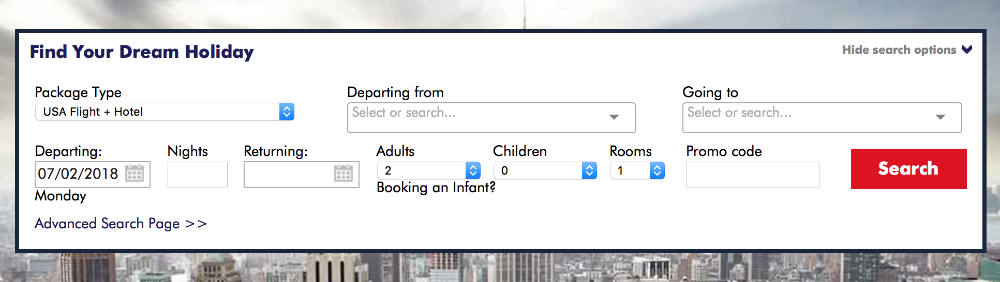

For this comparative assignment, I chose to evaluate a travel website titled “Mush Love Festivals” with the UK blog named “My America Holiday”.
Mush Love Festivals’ Review
By reviewing the websites, I found that with the black color background and the white color fonts used in the top navigation bar, the website was very easy to follow. The website only has one single layout. Although the website fit all the content into a single layout rather than multiple pages, the webpage was still well-designed. That is because the website used five different title navigation bars which could slide the website. What I meant is that when I clicked on each navigation bar at the top, it brought me to the that exact section that I was looking for in the page. What I like the most about the website were their image and color choices. The website used a lot of bright and fresh colors such as pure red, green, and blue with a black background, which attracted my attention immediately. What is more, the website used several full screen banners and images which provided a sense of beauty and viewing pleasure. Simply by looking at those beautiful images, made me want to go to theirs’s festivals.

image from http://mustlovefestivals.com/#!/find-a-festival
I also found the “Mush Love Festivals” very well-organized. They provided a section called “Find a Festival” for viewers to choose the festival base on types and locations. This site was thoughtful because it could help the viewers find out the festival that best fit their needs. I was very inspired by this section. Therefore, I am planning to design an interactive site in my website in which my viewers can use it to discover new festivals. I will ask my viewers to fill in their favorite foods and activities,and base on such information, the website will suggest few festivals that the viewers might be interested in.
My America Holiday’ Review
Unlike the “Mush Love Festivals”, “My America Holiday” chose to use white color for their website’ background with a ton of writing information on it. I dislike the website at first. That is because I felt educational website was boring to look at. Also, the advertisements on the right-hand side was overwhelming and distractive for me. However, the more time I spent on the website, I started to enjoy reading the website. The website provided a great amount of professional travel articles with photography, such information was very inspiring and interesting. What is more, the website had multiple pages with navigation menus. Each navigation menus had several opinions to choose from. This website had a large number of information which requires time and patient to build. I appreciated the effort in the website. This website was very professional. It had a well-designed logo at the top left corner. I also like the integrative box which allow viewers to find their dream holiday based on time.
image from http://www.myamericaholiday.co.uk/blog